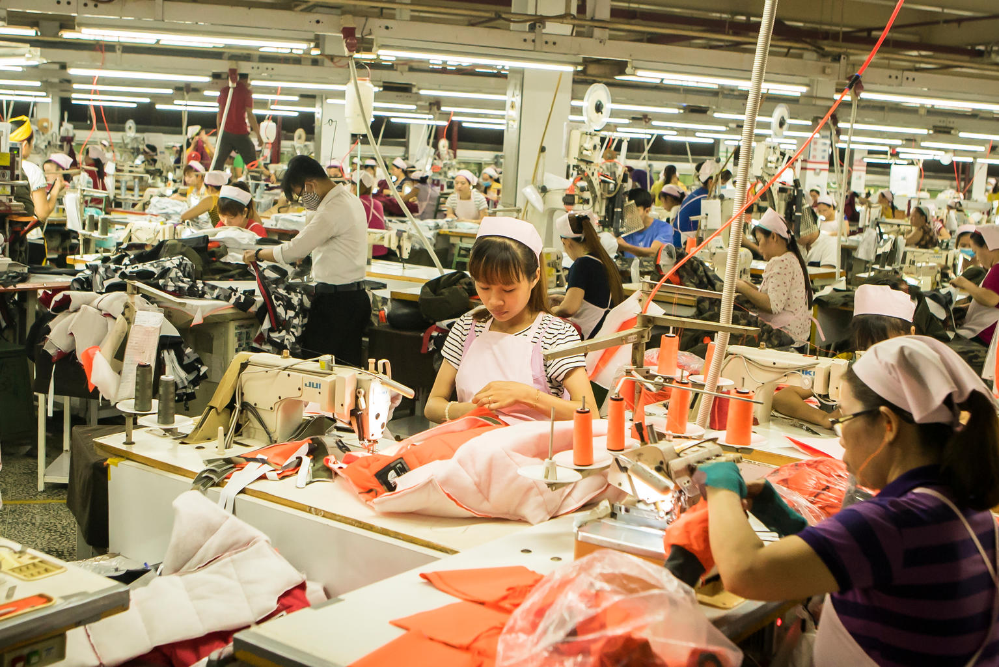
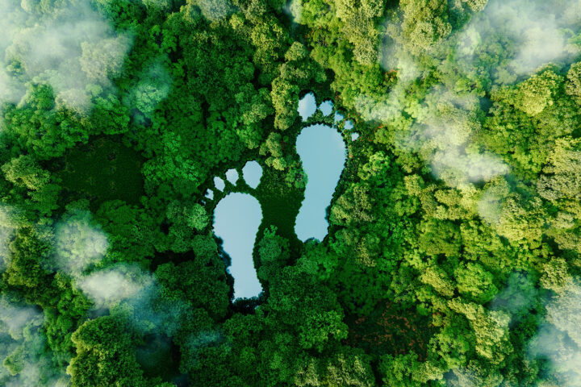
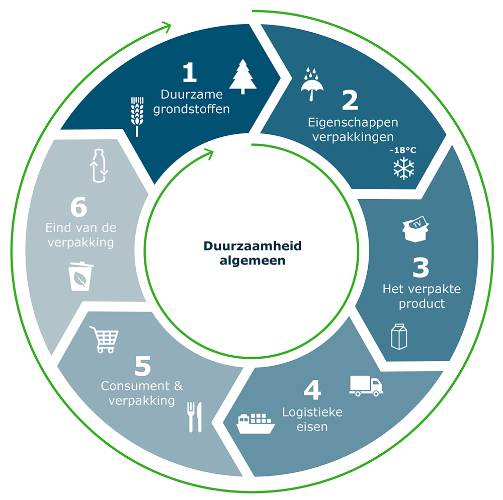
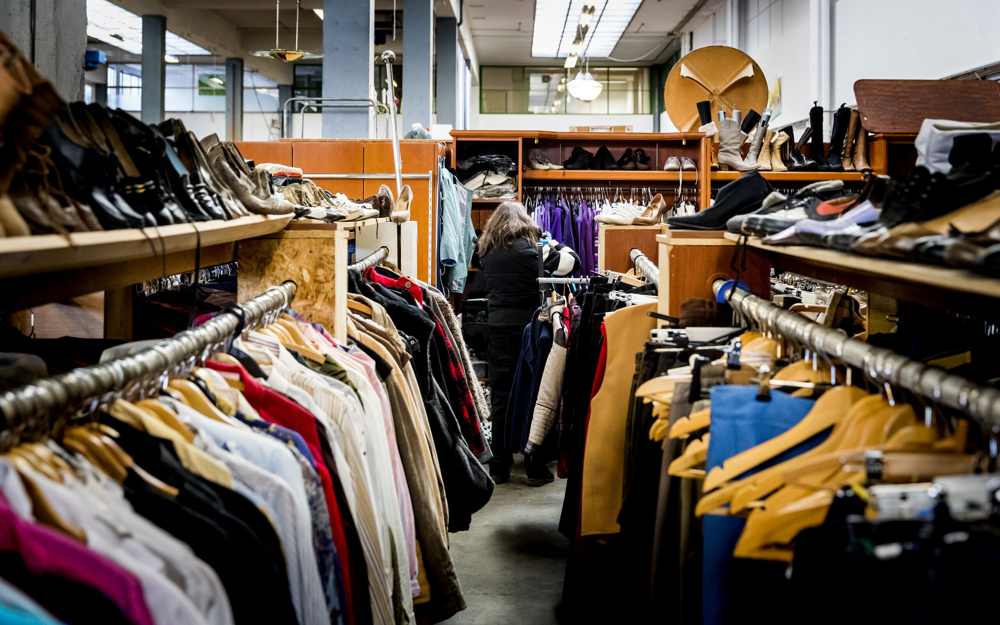

Afleveringen:
Deze Afleveringen gaan wij uitzenden om te discusseren over het onderwerp hiervan.
Kinderen in de kledingindustrie
Dit onderwerp is belangrijk niet alleen voor duurzame kleding maar overal alle kleding dat geproduceerd wordt. Dit is ook een groot probleem dat veel kinderen in slechte omstandigheden brengt waar wij het over willen hebben.
Het effect op het milieu
De grootste reden waarom mensen duurzaam beginnen te leven is voor het milieu. Het milieu is tot nu toe nog niet zo slecht, maar als we zo door blijven leven kunnen er slechte gevolgen oplopen voor onze volgende generaties, dat wij willen voorkomen.
Productieketen
In de productieketen is het proces waar het meest vuil wordt afgestoten, waardoor mensen meer duurzamer willen leven, daarom willen wij mensen dit ook overtuigen om duurzaam te leven door te laten zien hoe slecht sommige productieketens zijn voor de toekomst.
Tweede hands kleding
Tweede hands kleding is een van de beste manieren om beter duurzamer te leven. Wij proberen dan manieren uit te leggen om goed met tweede hands kleding om te gaan en wat je er mee moet doen om andere te voorkomen om nieuwe kleding te kopen.